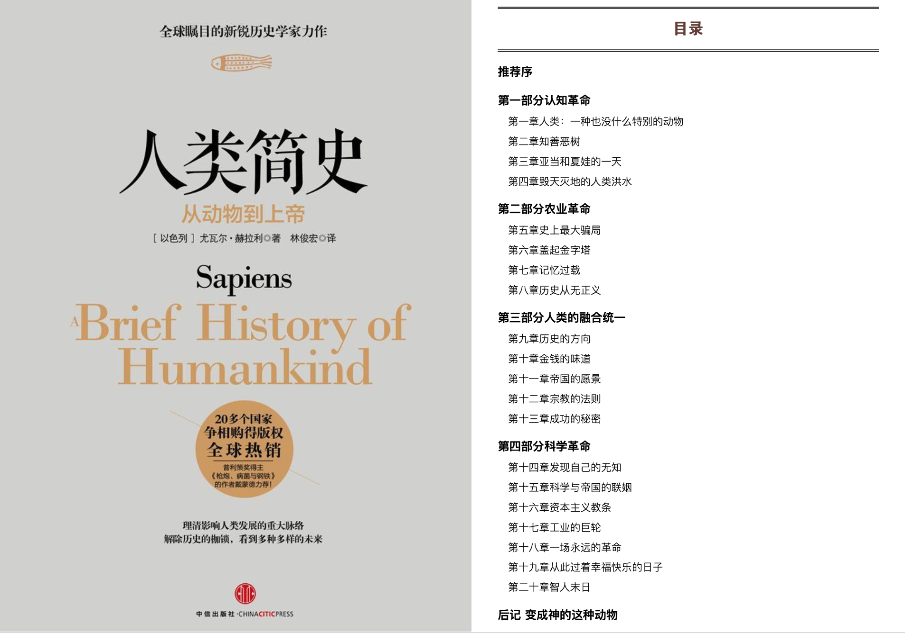
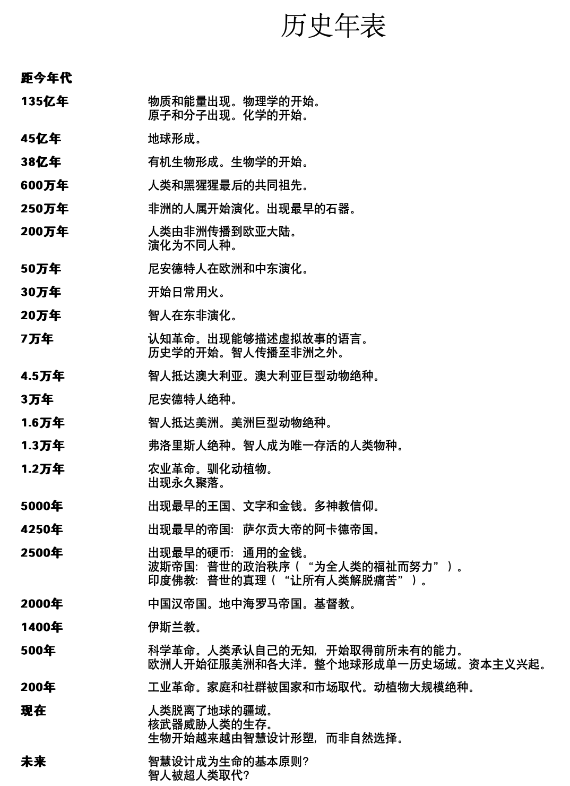

Daily Book
人类简史


- 在历史的路上，有三大重要革命：大约7万年前，“认知革命”（Cognitive Revolution）让历史正式启动。大约12000年前，“农业革命”（Agricultural Revolution）让历史加速发展。而到了大约不过是500年前，“科学革命”（Scientific Revolution）可以说是让历史画下句点而另创新局。这本书的内容，讲述的就是这三大革命如何改变了人类和其他生物。
认知革命
- 所谓“想象的现实”指的是某件事人人都相信，而且只要这项共同的信念仍然存在，力量就足以影响世界。
- 通过文字创造出想象的现实，就能让大批互不相识的人有效合作，而且效果还不只如此。正由于大规模的人类合作是以虚构的故事作为基础，只要改变所讲的故事，就能改变人类合作的方式。只要在对的情境之下，这些故事就能迅速改变。
- 智人发明出了许许多多的想象现实，也因而发展出许许多多的行为模式，而这正是我们所谓“文化”的主要成分。等到文化出现，就再也无法停止改变和发展，这些无法阻挡的变化，就成了我们说的“历史”。
- 有些学者声称自己能够知道采集者当时的感受，但从他们的理论中能够了解的，与其说是石器时代的宗教观，还不如说是他们的偏见。
- 第一波的灭绝浪潮是由于采集者的扩张，接着第二波灭绝浪潮则是因为农民的扩张；这些教训，让我们得以从一个重要观点来看今日的第三波灭绝浪潮：由工业活动所造成的物种灭绝。
- 对全世界上所有的大型动物来说，这场人类洪水的唯一幸存者可能只剩下人类自己，还有其他登上诺亚方舟但只作为人类盘中佳肴的家禽家畜。
农业革命
- 其实不是我们驯化了小麦，而是小麦驯化了我们。“驯化”（domesticate）一词来自拉丁文“domus”，意思就是“房子”。但现在关在房子里的可不是小麦，而是智人。
- 如果要衡量某种物种演化成功与否，评断标准就在于世界上其DNA螺旋的拷贝数的多寡。这很类似于货币的概念，就像今天如果要说某家公司行不行，我们看的是它的市值有多少钱，而不是它的员工开不开心；物种的演化成功，看的就是这个物种DNA拷贝数在世界上的多寡。如果世界上不再有某物种的DNA拷贝，就代表该物种已经绝种，也等于公司没有钱而宣告倒闭。而如果某个物种还有许多个体带着它的DNA拷贝存在这个世上，就代表着这个物种演化成功、欣欣向荣。从这种角度看来，1000份DNA拷贝永远都强过100份。这正是农业革命真正的本质：让更多的人却以更糟的状况活下去。
- 但没有人发现究竟发生了什么事。每一代人都只是继续着上一代生活的方式，在这里修一点，那里改一些。但矛盾的是，一连串为了让生活更轻松的“进步”，最后却像是在这些农民的身上加了一道又一道沉重的枷锁。“为什么人类会犯下如此致命的误判？其实人类在历史上一直不断重蹈覆辙，道理都相同：因为我们无法真正了解各种决定最后的结果。每次人类决定多做一点事（像是用锄头来耕地，而不是直接把种子撒在地上），我们总是想：“没错，这样是得多做点事。不过收成会好得多！就再也不用担心荒年的问题了。孩子也永远不用挨饿入睡。”确实这也有道理。工作努力辛苦一些，生活也就能过得好一点。不过，这只是理想的状况。
- 奢侈品史上常有这样的情况，就是原本的奢侈品往往最后会成为必需品，而且带来新的义务。等到习惯某种奢侈品，就开始认为这是天经地义。接着就是一种依赖。最后，生活中就再也不能没有这种奢侈品了。
- 现在看来，虚构故事的力量强过任何人的想象。农业革命让人能够开创出拥挤的城市、强大的帝国，接着人类就开始幻想出关于伟大的神灵、祖国、有限公司的故事，好建立起必要的社会连接。虽然人类的基因演化仍然一如既往慢如蜗牛，但人类的想象力却是极速奔驰，建立起了地球上前所未有的大型合作网络。
- 演化的基础是差异，而不是平等。每个人身上带的基因码都有些许不同，而且从出生以后就接受着不同的环境影响，发展出不同的特质，导致不同的生存概率。“生而平等”其实该是“演化各有不同”。浪漫主义告诉我们，为了要尽量发挥潜力，就必须尽量累积不同的经验。必须体会不同的情感，尝试不同的关系，品尝不同的美食，还必须学会欣赏不同风格的音乐。而其中最好的一种办法，就是摆脱日常生活及工作，远离熟悉的环境，前往遥远的国度，好亲身“体验”不同的文化、气味、美食和规范。我们总会不断听到浪漫主义的神话，告诉我们“那次的经验让我眼界大开，从此整个生活都不一样了”。
- 身为人类，我们不可能脱离想象所建构出的秩序。每一次我们以为自己打破了监狱的高墙、迈向自由的前方，其实只是到了另一间更大的监狱，把活动范围稍稍加以扩大。
- 为了要让工作顺利，操作这种抽屉系统的人必须接受训练，思考的方式不能像一般人，而得有专业文书和会计的样子。从古至今，我们都知道文书和会计的想法就是有点没人性，像个文件柜一样。但这不是他们的错。如果他们不这样想，他们的抽屉就会一片混乱，也就无法为政府、公司或组织提供所需的服务。而这也正是文字对人类历史所造成最重要的影响：它逐渐改变了人类思维和看待这个世界的方式。过去的自由连接、整体思考，已经转变为分割思考、官僚制度。
人类的融合统一
- 学者认为每种文化都自成一格、和谐共存，而且都有独特的不变本质。每一群人都会有自己的世界观，和社会、法律及政治系统，而且各自运作顺畅，就像是行星绕着太阳一样。据这种观点，文化只要独立不受影响，就不会有所改变，而会依照原本的步调，朝向原本的方向持续下去。直到出现了外界力量干预，才会造成改变。但现在，多数的文化学者都认定事情正好相反。虽然每种文化都有代表性的信仰、规范和价值，但会不断流动改变。只要环境或邻近的文化改变，文化就会有所改变及因应。除此之外，文化内部也会自己形成一股改变的动力。就算是环境完全与外界隔绝，生态也十分稳定，还是无法避免改变。如果是物理学的法则，绝不会有不一致的例外情形，但既然这些是人类自己想象创造出的秩序，内部就会有各式各样的矛盾。文化一直想弭平这些矛盾，因此就会促成改变。
- 人类不同的想法、概念和价值观也能逼着我们思考、批评、重新评价。一切要求一致，反而让心灵呆滞。如果说每个文化都需要有些紧张、有点冲突、有无法解决的两难，才能让文化更加精彩，那么身处任何文化中的人就都必然有些互相冲突的信念以及互相格格不入的价值观。正因为这种情况实在太普遍，甚至还有个特定的名词来形容：认知失调（cognitive dissonance）。一般认为认知失调是人类心理上的一种问题，但这其实是一项重要的特性，如果人真的无法同时拥有互相抵触的信念和价值观，很可能所有的文化都将无从建立，也无以为继。
- 公元前的1000年间，出现了三种有可能达到全球一家概念的秩序，相信这些秩序，就有可能相信全球的人类都“在一起”，都由同一套规则管辖，让所有人类都成了“我们”（至少有这个可能），“他们”也就不复存在。这三种全球秩序，首先第一种是经济上的货币秩序，第二种是政治上的帝国秩序，而第三种则是宗教上的全球性宗教，像是佛教、基督教和伊斯兰教。
- 正因为有了金钱概念，财富的转换、储存和运送都变得更容易也更便宜，后来才能发展出复杂的商业网络以及蓬勃的市场经济。要是没有钱，市场和商业网络的规模、活力和复杂程度都必然相当有限。可以说金钱就是一种相互信任的系统，而且还不是随随便便的某种系统：金钱正是有史以来最普遍也最有效的互信系统。
- 像这样的文化多元性和疆界灵活性，不仅让帝国独树一格，更让帝国站到了历史的核心。正是这两项特征，让帝国能够在单一的政治架构下纳入多元的族群与生态区，让越来越多人类与整个地球逐渐融合为一。
- 文化的涵化（acculturation）与同化（assimilation）终于打破了新成员和旧精英之间的障碍。被征服者不再认为帝国是个外来占领他们的政体，而征服者也真心认为这些属民是自己帝国的一员。终于所有的“他们”都成了“我们。
- 我们今天常认为宗教造成的是歧视、争端、分裂。但在金钱和帝国之外，宗教正是第三种让人类统一的力量。正因为所有的社会秩序和阶级都只是想象的产物，所以它们也十分脆弱，而且社会规模越大，反而就越脆弱。而在历史上，宗教的重要性就在于让这些脆弱的架构有了超人类的合法性。有了宗教之后，就能说法律并不只是人类自己的设计和想象，而是来自一种绝对的神圣最高权柄。这样一来，至少某些基本的法则便不容动摇，从而确保社会稳定。
- 从历史上来看，一神论就像是个万花筒，承继了一神论、二元论、多神论和泛神论，收纳在同一个神圣论述之下。结果就是，基督徒大致上是信奉一神论的上帝，相信二元论的魔鬼，崇拜多神论的圣人，还相信泛神论的鬼魂。像这样同时有着不同甚至矛盾的思想，而又结合各种不同来源的仪式和做法，宗教学上有一个特别的名称：综摄（syncretism）。很有可能，综摄才是全球最大的单一宗教。
- 人遇到事情通常就会产生欲念，而欲念总是会造成不满。遇到不喜欢的事，就想躲开；遇到喜欢的事，就想维持并增加这份愉快。但正因如此，人心就永远不满、永远不安。这点在碰上不悦的时候格外明显，像是感觉疼痛的时候，只要疼痛持续，我们就一直感到不满，用尽办法想要解决。然而，就算是遇上欢乐的事，我们也从不会真正满足，而是一直担心这种欢乐终将结束或是无法再持续或增强。
- 根据佛教经典，释迦牟尼本人就达到了涅槃，从痛苦中完全解脱。而在这之后他就被称为“佛陀”，意为“觉悟者”。接着，佛陀一生前往各地普传佛法，希望让所有人离苦得乐。佛陀的教诲一言以蔽之：痛苦来自欲望；要从痛苦中解脱，就要放下欲望；而要放下欲望，就必须训练心智，体验事物的本质。
- 历史不像是物理学或经济学，目的不在于做出准确预测。我们之所以研究历史，不是为了要知道未来，而是要拓展视野，要了解现在的种种绝非“自然”，也并非无可避免。未来的可能性远超过我们的想象。
科学革命
- 如果要在过去500年间挑出一个最重大、具代表性的一刻，一定就是1945年7月16日上午5点29分45秒。就在这一秒，美国科学家在新墨西哥的阿拉莫戈多引爆了第一颗原子弹。从这时开始，人类不仅有了改变历史进程的能力，更有了结束历史进程的能力。
- 科学革命并不是“知识的革命”，而是“无知的革命”。真正让科学革命起步的伟大发现，就是发现“人类对于最重要的问题其实毫无所知”。
- 现代科学和现代帝国背后的动力都是一种不满足，觉得在远方一定还有什么重要的事物，等着他们去探索、去掌握。然而，科学和帝国之间的连接还不仅如此而已。两者不只动机相同，连做法也十分类似。对现代欧洲人来说，建立帝国就像是一项科学实验，而要建立某个科学学科，也就像是一项建国大计。
- 科学家为帝国提供了各种实用知识、思想基础和科技工具，要是没有他们，欧洲人能否征服世界实在仍是未定之数。至于征服者报答科学家的方式，则是提供各种信息和保护，资助着各种奇特迷人的研究，而且将科学的思考方式传到地球上的每一个偏远角落。如果没有帝国的支持，科学能否发展得如此蓬勃，也仍在未定之天。绝大多数的科学学科一开始的目的，都只是为了让帝国继续发展，而且许多发现、收集、建筑和学术也都多亏了有陆海军及帝国统治者的慷慨协助。
- 真正让银行（以及整个经济）得以存活甚至大发利市的，其实是我们对未来的信任。“信任”就是世上绝大多数金钱的唯一后盾。
- 资本主义之名正是由此而来。所谓的“资本主义”（Capitalism），认为“资本”（capital）与“财富”（wealth）有所不同。资本指的是投入生产的各种金钱、物品和资源。而财富指的则是那些埋在地下或是浪费在非生产性活动的金钱、物品和资源。
- 这是自由市场资本主义美中不足之处。它无法保证利润会以公平的方式取得或是以公平的方式分配。而且相反的是，因为人类有追求利润和经济成长的渴望，就会决定盲目扫除一切可能的阻挠。等到“成长”成了无上的目标、不受其他道德伦理考虑的制衡，就很容易衍生成一场灾难。”
- 工业革命的核心，其实就是能源转换的革命。我们已经一再看到，我们能使用的能源其实无穷无尽。讲得更精确，唯一的限制只在于我们的无知。每隔几十年，我们就能找到新的能源来源，所以人类能用的能源总量其实在不断增加。
- 甚至是我们现在如此看重的“自由”，也可能是让我们不那么快乐的原因。虽然我们可以自己选择另一半、选择朋友、选择邻居，但他们也可以选择离开我们。现代社会每个人都拥有了前所未有的自由，能够决定自己要走哪条路，但也让我们越来越难真正信守承诺、不离不弃。于是，社群和家庭的凝聚力下降而解体，这个世界让我们感到越来越孤独。
- 佛教认为，快乐既不是主观感受到愉悦，也不是主观觉得生命有意义，反而是在于放下追求主观感受这件事。如果我们太看重这些内部的波动，就会变得太过执迷，心灵也就焦躁不安、感到不满。每次碰上不快，就感觉受苦。而且就算已经得到快感，因为我们还希望快感能够增强或是害怕快感将会减弱，所以心里还是不能感到满足。追求这些主观感受十分耗费心神，而且终是徒劳，只是让我们受制于追求本身。因此，苦的根源既不在于感到悲伤或疼痛，也不在于感觉一切没有意义。苦真正的根源就在于“追求”主观感受这件事，不管追求的是什么，都会让人陷入持续的紧张、困惑和不满之中。
All articles in this blog are licensed under CC BY-NC-SA 4.0 unless stating additionally.
Related Articles


Comment